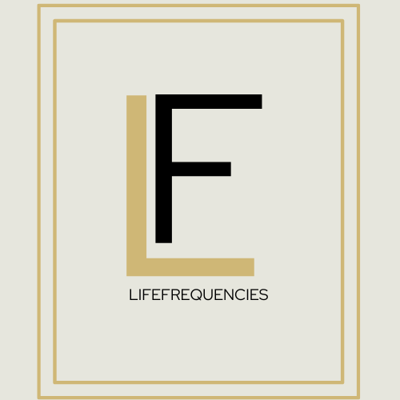

LifeFrequencies

Description
- An app to help individuals scan their environments for sound or frequencies that can help them practice mindfulness or meditation.
- The user would be able to scan their environment using a microphone and then an API would source that sound or frequency to something similar on the internet.
- The tools used to make this project were Unity, GitHub Desktop, and VSCode.
Project Links
GitHub Repository